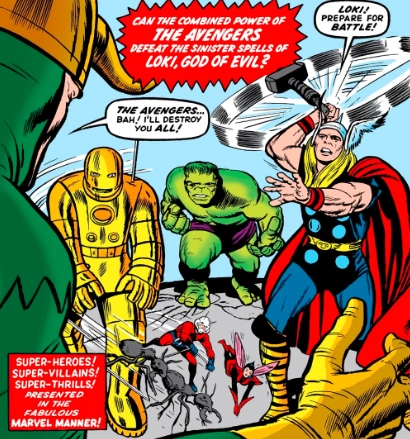
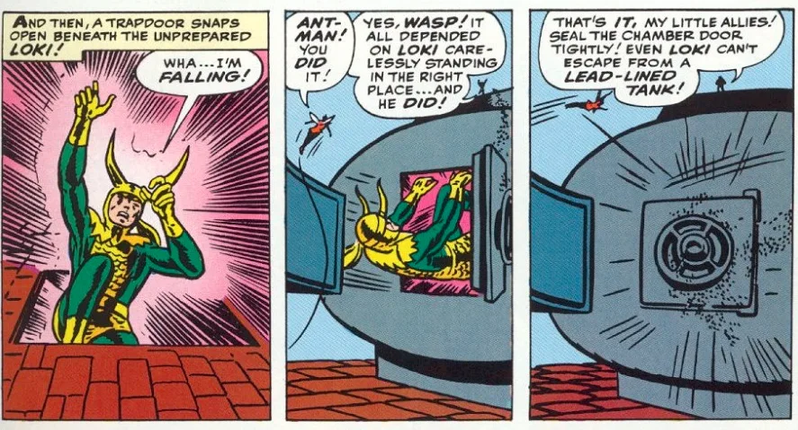
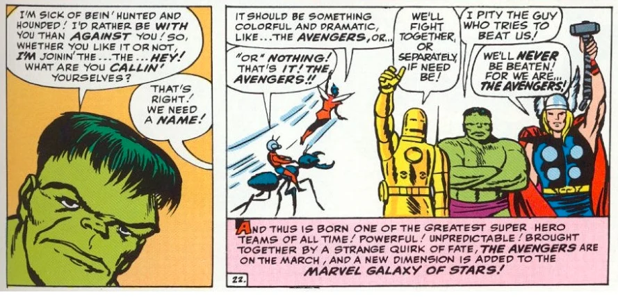

Os heróis da primeira formação dos Vingadores
The Avengers #1 conta com o envolvimento de outros personagens como Odin, o Quarteto Fantástico e a Brigada Juvenil (liderada por Rick Jones, amigo de Bruce Banner), mas os principais heróis que acabaram formando os Vingadores foram: Thor, Hulk, Homem de Ferro, Homem-Formiga e a Vespa!
A primeira história dos Vingadores
A história começa graças ao Loki, que está preso na Ilha do Silêncio em Asgard. Mesmo estando longe, o vilão conjura uma projeção sua na Terra, em busca de vingança e contra o seu irmão… Thor.
O Deus da Trapaça encontra o Thor na sua forma humana de Donald Blake e decide armar todo um plano para atraí-lo e derrotá-lo não como Blake, mas sim na sua forma mais poderosa. Daí, vemos o Loki cria uma ilusão de uma dinamite em uma ponte, atraindo o Hulk.
O verdão tenta evitar a destruição, mas como a bomba era uma ilusão, é ele quem acaba provocando o acidente. Mesmo que ele tenha conseguido evitar que um trem caísse, a ponte desaba e é noticiado que o Hulk está à solta espalhando destruição.
Em busca de inocentar o Hulk e entender o que está acontecendo, Rick Jones e sua Brigada Juvenil tentam pedir ajuda ao Quarteto Fantástico, mas Loki desvia o sinal para… o Thor.
Porém, o sinal de rádio do pedido de Jones também é captado pelo Homem de Ferro, Homem-Formiga e a Vespa!
Nesse meio tempo, o Thor acaba indo até Asgard e pede a Odin para que pudesse ver o seu irmão. Depois de uma grande batalha, Thor vence o Loki e o leva à Terra para poder inocentar o Hulk e explicar o que tinha acontecido de verdade.
E é aí que o Loki se torna radioativo e ameaça os heróis, mas acaba sendo derrotado depois de ser atingido por uma porta acionada pelas formigas de Hank Pym (parece familiar?).
A origem do nome Vingadores
Depois de derrotarem o Loki, os heróis percebem que mandaram bem trabalhando juntos, sugerindo que eles formassem uma equipe. Então, Janet (a Vespa) sugere que eles deveriam se chamar “algo como os Vingadores”.
Pym acaba aprovando o nome e… história foi feita! Nasciam os Vingadores! Já conheciam a origem da equipe nos quadrinhos?